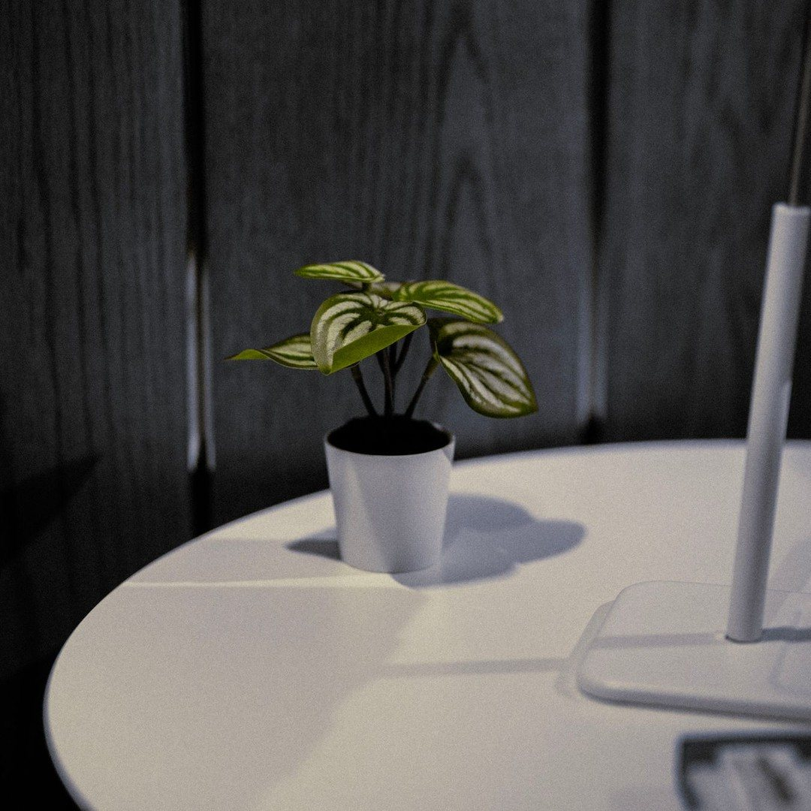
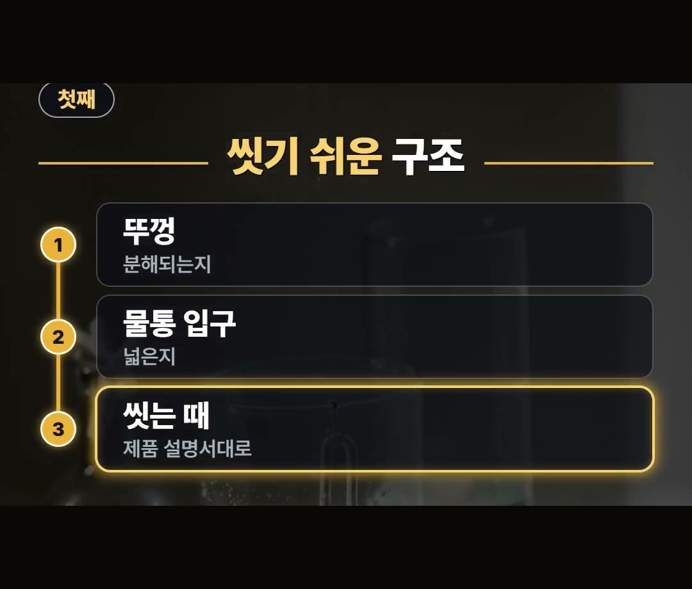
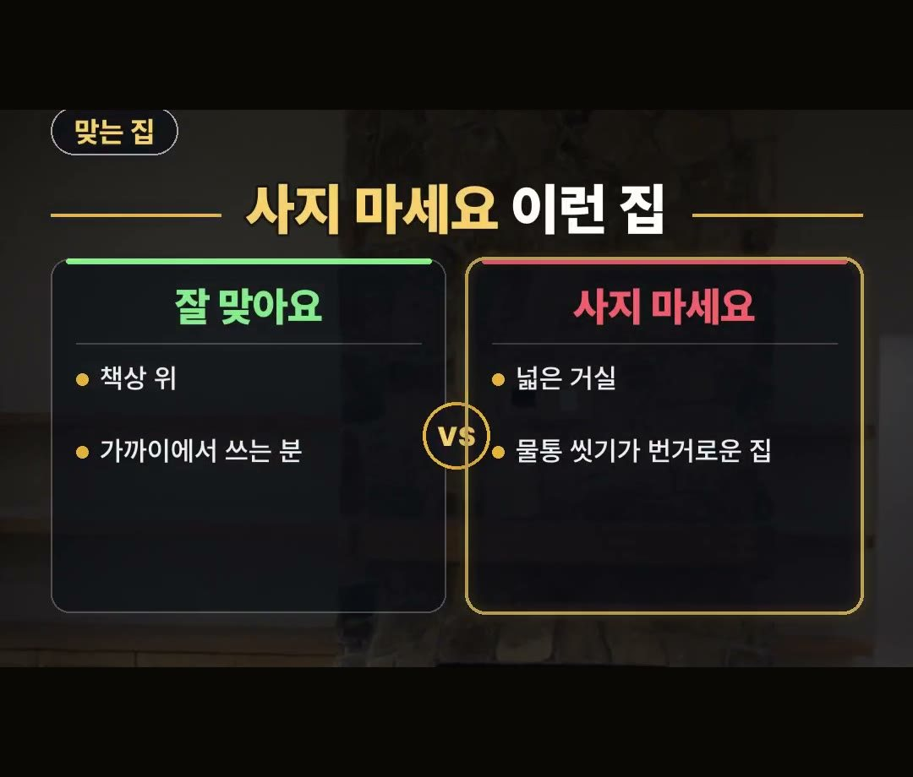

미니 가습기 추천, 넓은 거실에 둘 집이면 사지 마세요
※ 이 글에는 제휴 링크가 포함되어 있으며, 링크를 통해 구매하시면 일정 수수료를 받을 수 있습니다. (가격은 같습니다)
※ 이 포스팅은 쿠팡 파트너스 활동의 일환으로, 이에 따른 일정액의 수수료를 제공받습니다.
※ 이 콘텐츠는 토스쇼핑 쉐어링크 활동의 일환으로, 링크를 통한 구매가 발생하면 일정 수수료를 지급받습니다.

미니 가습기 추천 글을 찾아보고 계신다면, 사기 전에 둘 자리부터 먼저 떠올려 보세요.
같은 미니 가습기인데도 어떤 집에서는 사 놓고 안 써서 손해가 되기도 합니다.
작고 예뻐서 담았는데 둘 자리와 맞지 않으면 서랍으로 들어가게 됩니다.
이 글은 써 보고 쓴 후기가 아니라, 사기 전에 볼 점을 정리한 글이에요.
어떤 집에 맞고 어떤 집에는 맞지 않는지, 살 때 볼 2가지와 함께 차례로 적어 두었습니다.
미니 가습기는 책상처럼 가까운 자리에 두고 쓰는 물건이에요.
넓은 거실에 두려는 집이나 물통 씻기가 번거로운 집이라면 사지 않는 편이 낫다는 점을 정리해 봤어요 💧
둘 자리와 맞지 않으면 서랍으로 들어갑니다
미니 가습기는 작고 예쁜 모양에 끌려서 먼저 담게 되는 물건입니다.
그런데 둘 자리와 맞지 않으면 결국 서랍으로 들어갑니다.
사 놓고 안 쓰면 그대로 손해가 됩니다.
그래서 모양보다 먼저 볼 것은 우리 집 어디에 둘지입니다.
둘 자리가 떠오르지 않는다면 담기 전에 한 번 더 생각해 보세요.
미니 가습기는 가까운 자리에 두는 물건
미니 가습기는 작은 물통의 물을 안개처럼 뿜는 물건입니다.
책상처럼 가까운 자리에 두고 쓰는 물건입니다.
그래서 두는 자리가 먼저입니다.
책상 위처럼 가까이에 둘 자리가 정해져 있는지부터 떠올려 보세요.
자리가 정해졌다면 그다음에 아래 2가지를 보면 됩니다.
살 때 고르는 요령 첫째, 씻기 쉬운 구조
살 때는 2가지를 보면 됩니다.
첫째는 씻기 쉬운 구조인지입니다.
- 뚜껑이 분해되는지
- 물통 입구가 넓은지
이 두 가지는 상품 설명에 나옵니다.

물을 담아 쓰는 물건이라 씻기 편한지를 먼저 봅니다.
씻는 때는 제품 설명서에 적힌 대로 맞추면 됩니다.
물통 씻기가 번거롭게 느껴지는 분이라면 이 대목에서 한 번 더 생각해 보시는 것이 좋습니다.
살 때 고르는 요령 둘째, 전원과 필터
둘째는 전원과 필터입니다.
- 선을 꽂는 방식인지
- 무선인지
- 솜 스틱 필터를 갈아 끼우는지
선을 꽂는 방식인지 무선인지는 쓰는 자리를 떠올리며 보면 됩니다.
솜 스틱 필터를 갈아 끼우는 방식인지도 상품 설명에서 함께 확인해 보세요.
미니 가습기가 잘 맞는 집과 사지 말아야 할 집
책상 위에 두고 가까이에서 쓰는 분이면 잘 맞습니다.
반대로 아래와 같은 집이면 사지 않는 편이 낫습니다.
- 넓은 거실에 두려는 집
- 물통 씻기가 번거로운 집

둘 자리부터 정하고, 그 자리가 책상처럼 가까운 곳인지 보면 됩니다.
사기 전에 차례대로 확인하기
담기 전에 아래 순서대로 한 번씩 짚어 보세요.
1. 둘 자리가 책상처럼 가까운 자리인지 떠올립니다. 2. 뚜껑이 분해되는지 상품 설명에서 봅니다. 3. 물통 입구가 넓은지 봅니다. 4. 선을 꽂는 방식인지 무선인지 봅니다. 5. 솜 스틱 필터를 갈아 끼우는 방식인지 봅니다.
넓은 거실에 두려던 것이었다면 여기서 멈추는 편이 낫습니다.
정리
- 미니 가습기는 작은 물통의 물을 안개처럼 뿜는 물건이라, 책상처럼 가까운 자리에 두고 씁니다.
- 살 때는 뚜껑이 분해되는지, 물통 입구가 넓은지 상품 설명에서 봅니다.
- 선을 꽂는 방식인지 무선인지, 솜 스틱 필터를 갈아 끼우는지도 함께 봅니다.
- 씻는 때는 제품 설명서에 적힌 대로 맞춥니다.
- 넓은 거실에 두려는 집, 물통 씻기가 번거로운 집이면 사지 않는 편이 좋습니다.
영상 속 상품 안내
영상 끝에 나온 상품은 토스쇼핑에 올라온 상품 가운데 하나를 소개한 것이에요.
상품 설명에 따르면 초음파 방식의 무선 미니 가습기이고, 화이트 색상 1개 구성입니다.
둘 자리가 책상처럼 가까운 곳인지 먼저 떠올려 보세요.
써 보고 쓴 글이 아니라 상품 설명을 옮긴 것이니, 자세한 내용은 판매 화면의 상품 설명에서 확인해 주세요.
제품 링크는 아래에 모아 두었어요.
📌 2026년 10월 기준 정보예요. 가격은 시기에 따라 달라질 수 있어요.
영상 화면: Pexels (Alireza Akhlaghi, Curtis Adams, Max Vakhtbovych, Raphael Justino, Thirdman, Tima Miroshnichenko)
사진: Pexels (aboodi vesakaran, HONG SON, Nur Demirbaş, Gülümser Çiçek, Phạm Tuấn Hải)